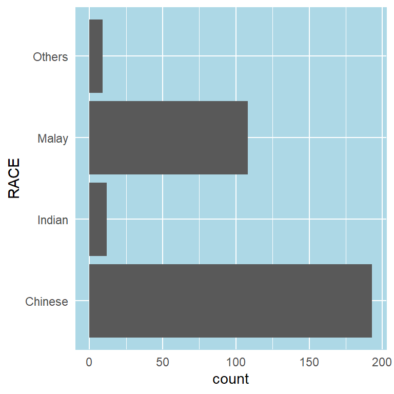
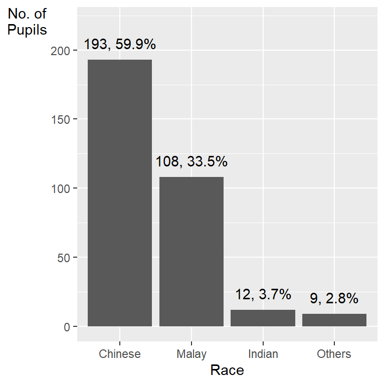
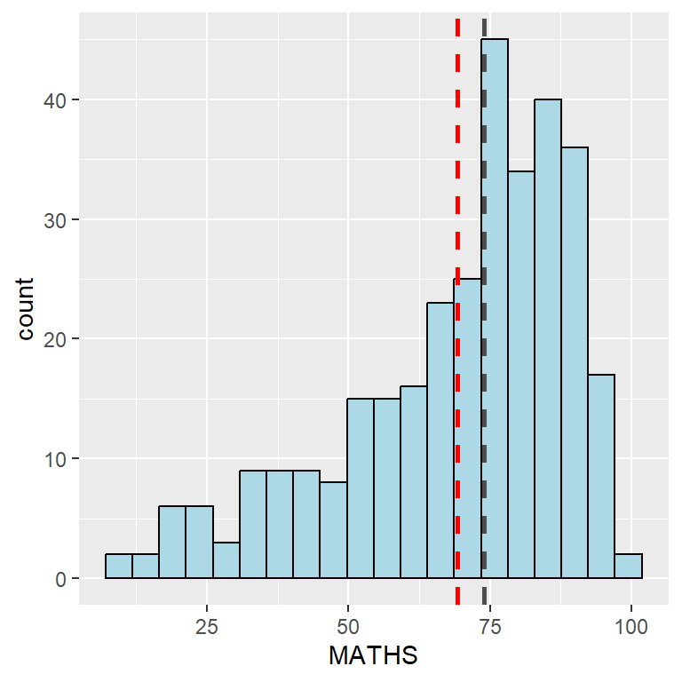
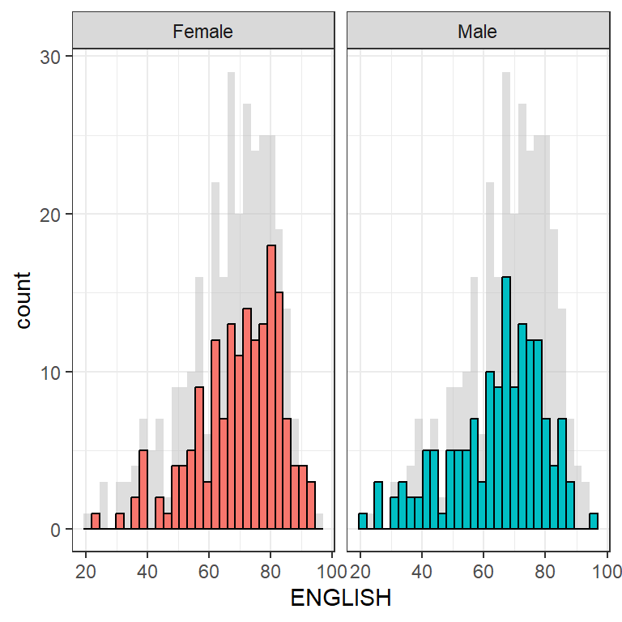
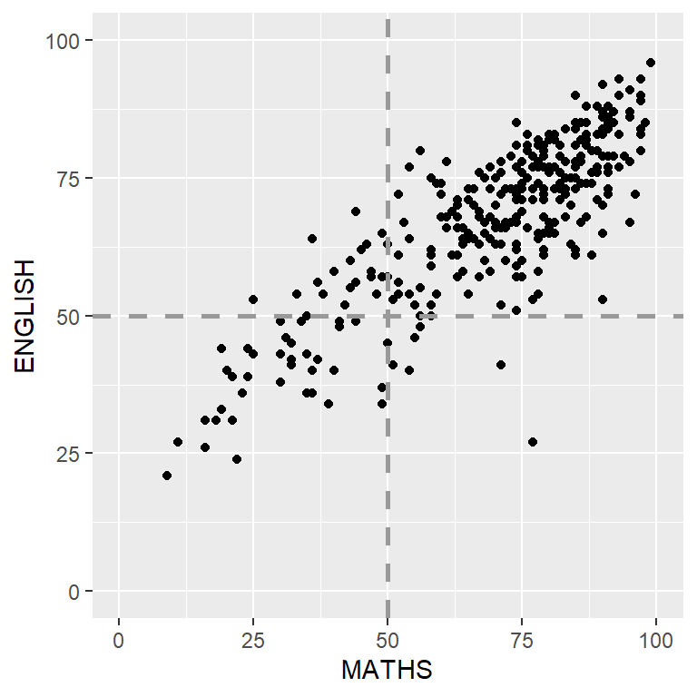

pacman::p_load(tidyverse)In-Class1
Loading Tidyverse
Importing data
exam_data <- read_csv("data/Exam_data.csv")Working with theme
Changing the colors of plot panel background of theme_minimal() to light blue and the color of grid lines to white.

ggplot(data=exam_data, aes(x=RACE)) +
geom_bar() +
coord_flip() +
theme_minimal() +
theme(
panel.background = element_rect(fill = "lightblue", colour = "lightblue",
size = 0.5, linetype = "solid"),
panel.grid.major = element_line(size = 0.5, linetype = 'solid', colour = "white"),
panel.grid.minor = element_line(size = 0.25, linetype = 'solid', colour = "white"))Designing Data-drive Graphics for Analysis I

ggplot(data=exam_data,
aes(x=reorder(RACE,RACE,
function(x)-length(x)))) +
geom_bar() +
ylim(0,220) +
geom_text(stat="count",
aes(label=paste0(..count.., ", ",
round(..count../sum(..count..)*100, 1), "%")),
vjust=-1) +
xlab("Race") +
ylab("No. of\nPupils") +
theme(axis.title.y=element_text(angle = 0))This code chunk uses fct_infreq() of forcats package.
exam_data %>%
mutate(RACE = fct_infreq(RACE)) %>%
ggplot(aes(x = RACE)) +
geom_bar()+
ylim(0,220) +
geom_text(stat="count",
aes(label=paste0(after_stat(count), ", ",
round(after_stat(count)/sum(after_stat(count))*100,
1), "%")),
vjust=-1) +
xlab("Race") +
ylab("No. of\nPupils") +
theme(axis.title.y=element_text(angle = 0))Designing Data-drive Graphics for Analysis II
- Adding mean and median lines on the histogram plot.
- Change fill color and line color

ggplot(data=exam_data,
aes(x= MATHS)) +
geom_histogram(bins=20,
color="black",
fill="light blue") +
geom_vline(aes(xintercept=mean(MATHS, na.rm=T)),
color="red",
linetype="dashed",
size=1) +
geom_vline(aes(xintercept=median(MATHS, na.rm=T)),
color="grey30",
linetype="dashed",
size=1)Designing Data-drive Graphics for Analysis III

ggplot(d, aes(x = ENGLISH, fill = GENDER)) +
geom_histogram(data = d_bg, fill = "grey", alpha = .5) +
geom_histogram(colour = "black") +
facet_wrap(~ GENDER) +
guides(fill = 'none') +
theme_bw()Designing Data-drive Graphics for Analysis IV

ggplot(data=exam_data,
aes(x=MATHS, y=ENGLISH)) +
geom_point() +
coord_cartesian(xlim=c(0,100),
ylim=c(0,100)) +
geom_hline(yintercept=50,
linetype="dashed",
color="grey60",
size=1) +
geom_vline(xintercept=50,
linetype="dashed",
color="grey60",
size=1)Tableau
Links to Tableau Visualisations: